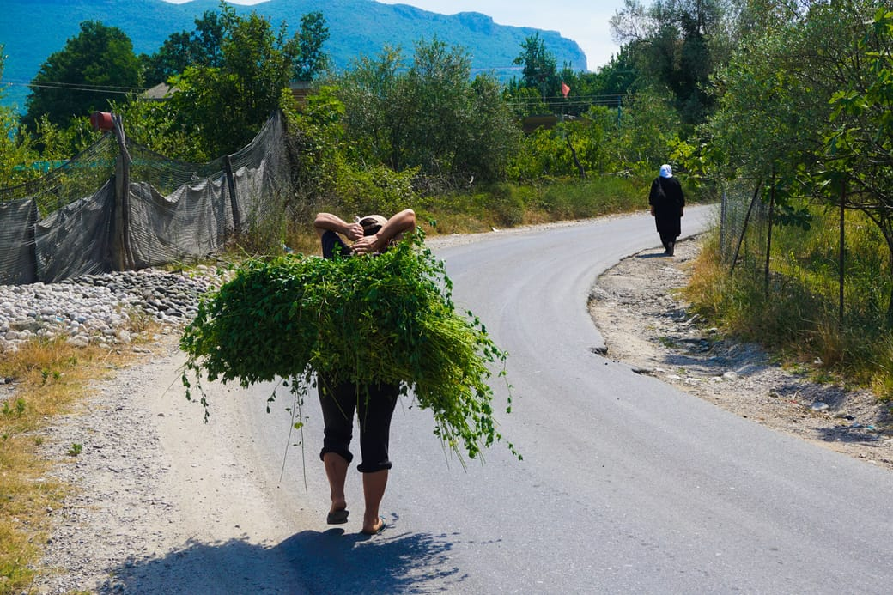
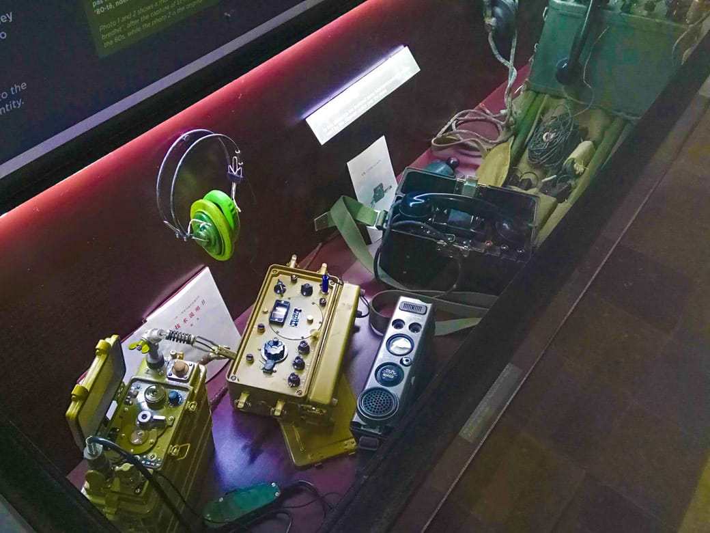
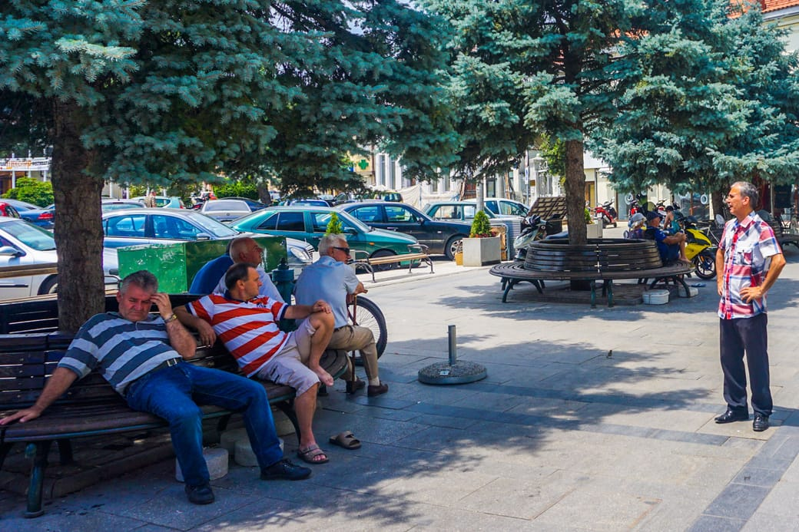

The first real change in my trip happened when I crossed from Croatia to Bosnia. It was the first Muslim country since I left Paris. The minarets and the chanting prayer of the muezzin made me realize that I’ve entered a place whose religion and culture I don’t understand.
The next abrupt change came as I passed the border from Montenegro to Albania. In the first few hundred meters a group of children ran towards me begging for money. Farmers lead their cows and sheep through the streets. I passed many middle-aged men in sleeve shirts and long trousers riding with an rusty bike towards the next village.

Farmer in Albania
For the first time in my voyage, a strange feeling of not being “one of them” arose in me. Having grown up in a wealthy country, it is more difficult to identify with the poor, rural lifestyle. The people seemed to be preoccupied with their flock and killing time. Even though my life belongings summed up to 10 kilograms, I still felt I had more than the idle men sitting on a stone wall, curiously watching me as I biked by. Their skin was tanned and wrinkled from the years spent under the ever shining sun. I felt free and cycling to new horizons, while they were tied to their village, farm, family, and support of life. Yet their warm voice and joyful smile gave me that unmistakable feeling of humanness and proximity. It was the instant glue that links together the people of different origins.
I was in a coffee shop with Cleon, a couchsurfer who immigrated into Albania that I’d met a few days earlier. A boy walked up to us and tried to sell us some band-aid. We declined his offer, since no one among us was bleeding severely, as it so often happens in the injurious activities of coffee shops. The waitress told us: “I have told him for weeks that he’d be better off selling lighters or chewing gum. Everyone needs a lighter. But he just doesn’t listen to me.” Which begs the question : Why would that little boy spend his time selling an object that no one needs, all while ignoring the advice of observant people? Why did he not use his mind to achieve his goal to make a living? “You’ll find this everywhere in Albania”, said Cleon. “If you create something new, such as a vase or cup that sells well, people will copy you and you’ll find duplicates all over town within weeks. There is no spirit of innovation here”. This was symptomatic of some deeper problem. How did it come to this?

One doesn’t need to look far back to understand what shaped the people’s mindsets. After World War II, the Balkan states of Yugoslavia endured an extremely repressive regime under the communist rule of Tito. The practice of any religion, even in your own house, was severely punished. The state set up mind-bending plans to spy on and wiretap its own population. They caught, persecuted, and tortured any non-conformist. For two generations, the state has wiped out the spirit of initiative and free thinking from its citizens.
So what remains today? After the 1990s, Balkan states difficultly transitioned from a state-controlled to market-driven economy. Finding a job is hard in a country that has suffered a decade long setback in a fast moving, globalized world. Corruption plagues in ever corner of society. To my question, “How is life here?”, most people answered with a hint of despair and disbelief in their eyes. “There’s no work. There’s no future for us in our country – we have to go elsewhere.” Not one of the dozen young people I asked in Albania and Macedonia were satisfied with their life there. When someone asked me, “would you find me a wife in Switzerland to marry so I can get a new life?”, I didn’t know how to answer. Given their situation, I could heartfully empathize with their hopelessness, something I often fail to do when talking to my fellow Frenchmen. ” I work 16 hours a day and don’t have enough money to buy a pair of shoes”, told me a gym employee. The average Albanian earns around 300€ euro per month. Yet most of what society covets, from drinking a beer to owning a smartphone or car, costs the same as in rich countries.

But many things we can learn from developing countries are, not surprisingly, on the human plane. You have to look hard to find someone that doesn’t greet you with a face-wide smile. And older people seem more integrated into society than in rich countries -this is something i would like to write about in a later article.
Even though I knew before than life in the Balkans was different than western Europe, experiencing it was surprising and sometimes unsettling. Because I traveled everywhere by land, I felt no spatial interruption from my home town. The world as it appears seems connected, close, and very real. Compared to taking the plane, it’s like the difference between seeing something in a movie and realizing it’s happening in your own garden.
A bicycle trip is an opportunity to experience, reflect and learn from reality. And this is what I want to share in this blog. In the last weeks, I drew a better understanding of causality in human behavior. Most of Albanians smoke not because they have “bad habits”, but because they need to kill time. They lack a spirit of initiative not because they are lazy, but because it has been taken away from them. I felt that they are people like me, except that they were born in a different country. The perspective it gave to western city life was irrefutable and compelling. It was certainly a taste of things to come in the east.